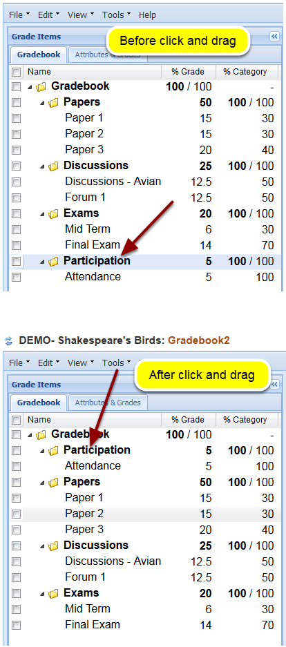
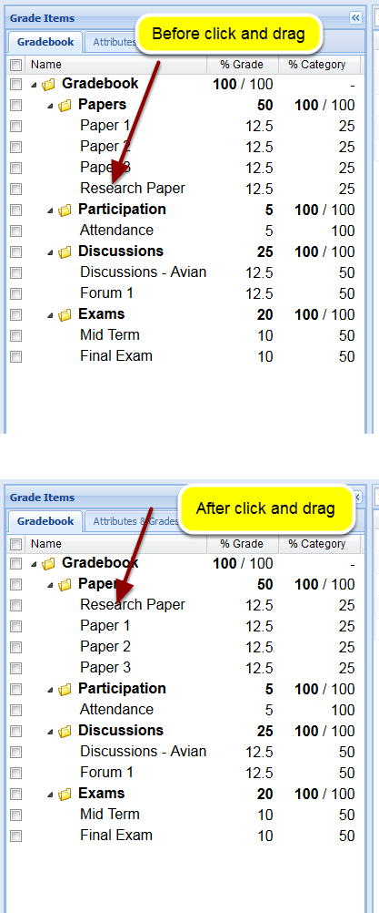

How do I reorder items or categories in Gradebook2?
Instructors can reorder the listing of Gradebook2 categories or reorder the listing on grade items within a single category.
Go to Gradebook2.

Select Gradebook2 from the Tool Menu in your site.
To reorder the categories, click and drag the category to the new location.

To reorder items within a category, click and drag the item to the new location.
